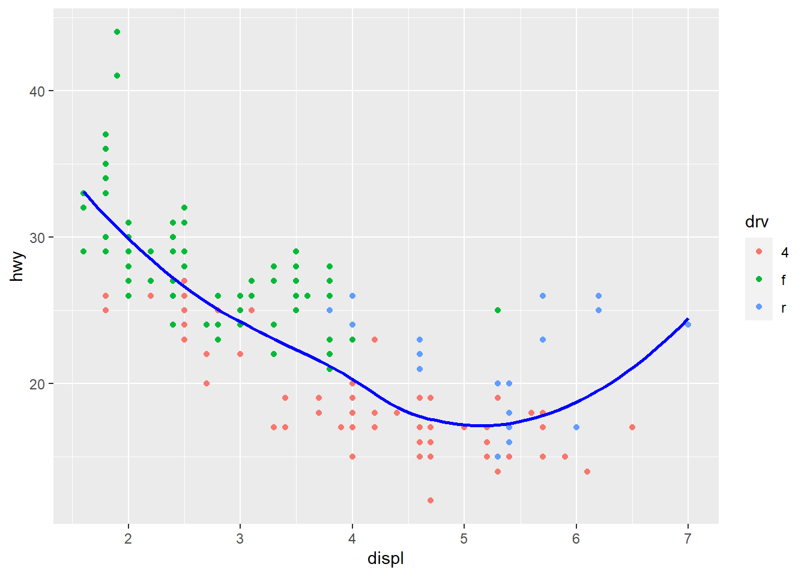
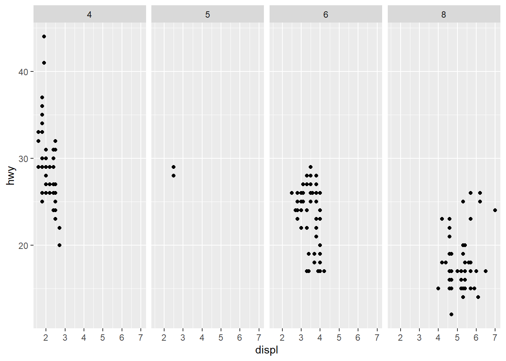

library(tidyverse)
data("mpg")Chapter 10
Layers
Important Points:
“The greatest value of a picture is when it forces us to notice what we never expected to see.” — John Tukey
ggplot2will use maximum 6 shapes at a time. The 7th shape is treated as a missing value.Using
alphaaesthetic for a discrete variable is not advised.The shapes used in
ggplot2are as follows(Wickham 2016) :--
Shapes available to use in ggplot2. The best place to explore
ggplot2extensions and graphs is the ggplot2 extensions gallery.Best place to search for and understand the
geomswithinggplot2is ggplot2 Function Reference.
10.2.1 Exercises
Question 1
Create a scatterplot of hwy vs. displ where the points are pink filled in triangles.
The scatter-plot is displayed in Figure 1 .
mpg |>
ggplot(aes(x = hwy, y = displ)) +
geom_point(shape = 24, fill = "pink") +
theme_bw()Question 2
Why did the following code not result in a plot with blue points?
ggplot(mpg) +
geom_point(aes(x = displ, y = hwy, color = "blue"))The mistakes in this code produces a wrong plot as shown in Figure 2 .
ggplot(mpg) +
geom_point(aes(x = displ, y = hwy, color = "blue"))The code will not result in “blue” points because the argument color = "blue" is within the aesthetics brackets, i.e., aes(). This is because this treats color as an aesthetic to be mapped to a variable. And, ggplot2 starts looking for a variable called blue which does not exist. Accordingly, it produces a scatter plot which shows legend of color, with a variable called “blue”.
The corrected code and results are displayed below in Figure 3 .
mpg |>
ggplot() +
geom_point(aes(x = displ, y = hwy),
color = "blue") +
theme_bw()
Question 3
What does the stroke aesthetic do? What shapes does it work with? (Hint: use ?geom_point)
The stroke aesthetic controls the width of the border of the points in the geom_point . It works with all the shapes, as I tried, but it would work best with shapes 21, 22, 23 and 24 as shown below :---
mpg |>
ggplot() +
geom_point(aes(x = displ,
y = hwy,
stroke = displ/2),
shape = 22) +
theme_bw()Question 4
What happens if you map an aesthetic to something other than a variable name, like aes(color = displ < 5)? Note, you’ll also need to specify x and y.
In this case, I expect that the aesthetic color will be mapped to a logical variable, that can have two values, either TRUE (mapped to one colour) or FALSE (mapped to a second colour). Thus, the logical expression gets treated like a factor with two levels. The legend to the plot shows the two levels of that factor. For example:---
mpg |>
ggplot(aes(x = displ,
y = hwy,
color = displ < 5)) +
geom_point() +
theme_bw()10.3.1 Exercises
Question 1
What geom would you use to draw a line chart? A boxplot? A histogram? An area chart?
We would use the following geoms:
| S. No. | Chart type | geom_ to use in ggplot2 |
|---|---|---|
| 1 | Line Chart | geom_line() |
| 2 | Boxplot | geom_boxplot() |
| 3 | Histogram | geom_histogram() |
| 4 | Area Chart | geom_area() |
Question 2
Earlier in this chapter we used show.legend without explaining it:
ggplot(mpg, aes(x = displ, y = hwy)) +
geom_smooth(aes(color = drv), show.legend = FALSE)What does show.legend = FALSE do here? What happens if you remove it? Why do you think we used it earlier?
The argument show.legend = TRUE/FALSE decides whether the legend for colour, shape or size aesthetics should be displayed in the plot or not.
If we remove show.legend = FALSE from the code above, by default, ggplot2 will display the legend if it feels that a visual aesthetic has been mapped to a variable. By default, the position of the legend is on the right hand side of the plot.
I think we used it earlier in the chapter because we were displaying three plots in the same row, side-by-side, and wanted them to be of the same dimensions in the plot area to convey the difference between group and color aesthetics in mapping. If we had not included show.legend = FALSE , the third plot would have been squished due to presence of a legend on the right side. Here, the purpose was not to tell different colours representing drv of the cars, but to show difference between group and color aesthetics in mapping. Hence, we chose to ignore the legend.
ggplot(mpg, aes(x = displ, y = hwy)) +
geom_smooth(aes(color = drv), show.legend = FALSE) +
theme_bw()Question 3
What does the se argument to geom_smooth() do?
The se argument tells ggplot2 whether to display the confidence interval around the smooth line fitted to the data.
Question 4
Recreate the R code necessary to generate the following graphs. Note that wherever a categorical variable is used in the plot, it’s drv.
The R-code is as shown below:--
# First Plot
mpg |>
ggplot(aes(displ, hwy)) +
geom_point() +
geom_smooth(se = FALSE, color = "blue")
# Second Plot
mpg |>
ggplot(aes(displ, hwy)) +
geom_point() +
geom_smooth(aes(group = drv),
se = FALSE,
color = "blue")
# Third Plot
mpg |>
ggplot(aes(x = displ,
y = hwy,
color = drv)) +
geom_point() +
geom_smooth(se = FALSE)
# Fourth Plot
mpg |>
ggplot(aes(displ, hwy)) +
geom_point(aes(color = drv)) +
geom_smooth(se = FALSE, color = "blue")
# Fifth Plot
mpg |>
ggplot(aes(displ, hwy)) +
geom_point(aes(color = drv)) +
geom_smooth(aes(linetype = drv),
se = FALSE,
color = "blue")
# Sixth Plot
mpg |>
ggplot(aes(x = displ,
y = hwy,
fill = drv)) +
geom_point(shape = 21,
color = "white",
stroke = 1.5)


10.4.1 Exercises
Question 1
What happens if you facet on a continuous variable?
Technically, it is possible to facet on a continuous variable. ggplot2 will be forced to treat each value of a continuous variable as a factor / level, and produce separate graph for it. However, faceting on a continuous variable is not advisable because it produces too many plots, and could end up producing a plot for each value of the continuous variable as shown in the .
Thus, we should always facet on a categorical variable.
data("diamonds")
diamonds |>
# Filter to reduce number of observations to
# avoid overuse of computing power
filter(carat > 2.5) |>
ggplot(aes(y = price,
x = carat)) +
geom_point() +
theme_minimal() +
facet_wrap(~price)Question 2
What do the empty cells in the plot above with facet_grid(drv ~ cyl) mean? Run the following code. How do they relate to the resulting plot?

ggplot(mpg) +
geom_point(aes(x = drv,
y = cyl))The empty cells in the plot above with facet_grid(drv ~ cyl) mean that there are no observations for that particular combination of drv and cyl . For example, there are no cars with 5 cyl and 4 drv .
Question 3
What plots does the following code make? What does . do?
ggplot(mpg) +
geom_point(aes(x = displ, y = hwy)) +
facet_grid(drv ~ .)
ggplot(mpg) +
geom_point(aes(x = displ, y = hwy)) +
facet_grid(. ~ cyl)

The plots generated are displayed above in ?@fig-q3-ex4 .
Thus, it is clear that the marker “.” is used as a filler to decide whether the faceting variable’s levels are to be displayed across rows or across columns.
The following ?@fig-q3a-ex4 displays this in action. When the code in facet_grid() is drv ~ ., then the plot produced is with levels of drv across rows. When the code is . ~ drv, then the plot produced is with levels of drv across columns. Thus, the “.”can be used with facet_grid() to create plots like facet_wrap() with levels across columns or rows, as per our choosing. The similar output could be achieved with facet_wrap() using the option dir = "v" or dir = "h".
# Plot 1
ggplot(mpg) +
geom_point(aes(x = displ, y = hwy)) +
facet_grid(drv ~ .) +
labs(title = "Plot 1")
# Plot 2
ggplot(mpg) +
geom_point(aes(x = displ, y = hwy)) +
facet_grid(. ~ drv) +
labs(title = "Plot 2")Question 4
Take the first faceted plot in this section:
ggplot(mpg) +
geom_point(aes(x = displ, y = hwy)) +
facet_wrap(~ class, nrow = 2)What are the advantages to using faceting instead of the color aesthetic? What are the disadvantages? How might the balance change if you had a larger data-set?
Advantages of faceting instead of using color aesthetic:
It can be used in black and white print medium.
When there are too many levels, too many colours can be confusing and make the plot clutter up. Instead, using faceting makes it easier to display as many levels as wanted.
When we want to show difference in relation between x-axis and y-axis variable across different levels of faceting variable, it is better to show the plot with faceting, rather than colour aesthetic. This allows audience to immediately perceive the difference.
If the values of x-axis and y-axis are very different across different levels of faceting variable, then we can allow free scales in faceting. This option is not available in colour aesthetic, as all observations are on the same plot area.
Disadvantages of faceting instead of using color aesthetic:
Faceting makes individual plots smaller, so it is not good for mobile-view websites and smaller size plots.
If we want to compare observations on the same plot area, use of colors is better than using faceting because faceting splits observations across plots.
If the levels of faceting variable are very less, like 1-2; or, if the total observations are very few, then faceting will render plots which are very sparsely populated. Here, we will prefer colours.
If we had a larger data set, use of colours will lead to clutter in the plot. Here, we will prefer faceting.
Question 5
Read ?facet_wrap. What does nrow do? What does ncol do? What other options control the layout of the individual panels? Why doesn’t facet_grid() have nrow and ncol arguments?
The nrow indicates the number of rows to be created in the faceted plot, and ncol indicates the number of columns.
The other options which control the layout of individual panels are:-
dirwhich refers to direction, eitherhwhere plots are laid horizontally, orvwhere plots are laid vertically.as.tablewhich ifTRUE, makes the facets to be laid out like a table with the highest values at bottom right. If it isFALSE, the highest values are at top right.switchdecides where the labels are displayed on the plots.drop, which ifTRUE, will lead to dropping of plots without any observations.scales: which decides should the scales of plots be fixed (same for all) or free (different, as per data).
Question 6
Which of the following plots makes it easier to compare engine size (displ) across cars with different drive trains? What does this say about when to place a faceting variable across rows or columns?
# First Plot
ggplot(mpg, aes(x = displ)) +
geom_histogram() +
facet_grid(drv ~ .)
# Second Plot
ggplot(mpg, aes(x = displ)) +
geom_histogram() +
facet_grid(. ~ drv)The first plot makes it easier to compare the compare engine size (displ) across cars with different drive trains since we can easily compare displ levels across types of drive trains.
This tells us that the faceting variable should be placed across rows, to be easily able to compare. More generally, the variable to be compared should be across a common x-axis or a common y-axis for comparison across plots.
Question 7
Recreate the following plot using facet_wrap() instead of facet_grid(). How do the positions of the facet labels change?
ggplot(mpg) +
geom_point(aes(x = displ, y = hwy)) +
facet_grid(drv ~ .)The following code recreates the plot using facet_wrap() in Figure 11 .
ggplot(mpg) +
geom_point(aes(x = displ, y = hwy)) +
facet_wrap(~drv,
dir = "v",
strip.position = "right")
References
Wickham, Hadley. 2016. “Ggplot2: Elegant Graphics for Data Analysis.” https://ggplot2.tidyverse.org.